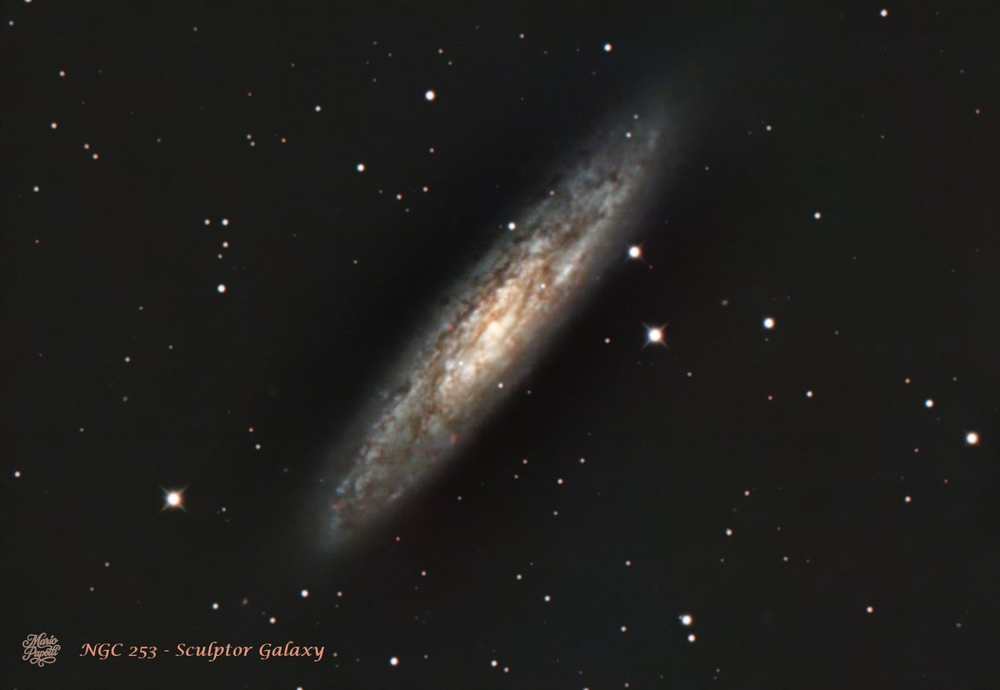
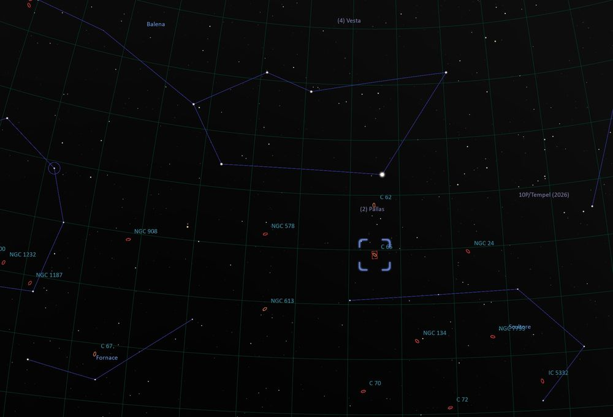

C 65 • NGC 253
Galassia dello Scultore
C 65 • NGC 253
Sculptor Galaxy

In questa immagine riprendo NGC 253, la Galassia dello Scultore, nelle serate del 9 e 10 ottobre 2026 dal cielo di Nole (TO). This image shows NGC 253, the Sculptor Galaxy, captured on the nights of October 9 and 10, 2026, from the skies above Nole, near Turin, Italy.
NGC 253 è una grande galassia a spirale nella costellazione dello Scultore, vista quasi di taglio. Dista circa 11 milioni di anni luce ed è una delle galassie più luminose del cielo australe. È nota per l’intensa formazione stellare, particolarmente attiva nella regione centrale, che la rende una galassia starburst. NGC 253 is a large spiral galaxy in the constellation Sculptor, seen nearly edge-on. It lies about 11 million light-years away and is one of the brightest galaxies in the southern sky. It is known for its intense star formation, especially in its central region, which makes it a starburst galaxy.
L’aspetto granuloso del disco è dovuto soprattutto alle irregolari bande di polvere e gas. Viste quasi di taglio, queste zone scure si alternano alle regioni più luminose, dove si trovano stelle e aree di formazione stellare. The galaxy’s grainy appearance is mainly caused by irregular lanes of dust and gas across its disk. Seen nearly edge-on, these dark regions alternate with brighter areas containing stars and stellar nurseries.
La mappa mostra la posizione di NGC 253 nella costellazione dello Scultore, in prossimità delle costellazioni vicine. The map shows the position of NGC 253 in Sculptor, close to the neighboring constellations.

| Nome Name | Sculptor Galaxy |
| Cataloghi Catalogues | Caldwell 65 (C 65) • NGC 253 |
| Costellazione Constellation | Scultore / Sculptor |
| Distanza Distance | 11,4 milioni di anni luce 11.4 million light-years |
| Tipo di oggetto Object Type | Galassia a spirale visibile quasi di taglio Spiral galaxy seen almost edge-on |
| Dimensione apparente Apparent Size | 27,5' × 6,8' |
| Magnitudine apparente Apparent Magnitude | 7,8 |
| Caratteristica principale Main Feature | È la sua intensa formazione stellare: è una galassia starburst, con molte stelle che si stanno formando rapidamente, soprattutto nella regione centrale. It is its intense star formation: it is a starburst galaxy, with many stars forming rapidly, especially in the central region. |
Una galassia starburst è un tipo di galassia in cui il processo di formazione stellare avviene a un ritmo eccezionalmente rapido e violento, consumando le riserve di gas a una velocità insostenibile sul lungo periodo. Mentre una galassia stabile come la nostra Via Lattea produce in media da 1 a 2 masse solari di nuove stelle all'anno, una galassia starburst può generarne decine, centinaia o addirittura migliaia nello stesso arco di tempo. A starburst galaxy is a type of galaxy in which the process of star formation occurs at an exceptionally rapid and intense rate, consuming gas reserves at a speed that is unsustainable in the long term. While a stable galaxy like our own Milky Way produces, on average, 1 to 2 solar masses' worth of new stars per year, a starburst galaxy can generate tens, hundreds, or even thousands of them within the same timeframe.
Questa immagine l'ho ottenuta dall'integrazione di: This image was obtained by integrating:
Ripresi nelle serate del 9 e 10 ottobre 2026, dal cielo di Nole (TO). Captured on October 9 and 10, 2026, from Nole, near Turin, Italy.
| Telescopio Telescope | Tecnosky RC8 - 1600 mm |
| Camera principale Main Camera | ZWO ASI 294 MC Pro e filtro IDAS NGS1 ZWO ASI 294 MC Pro camera and an IDAS NGS1 filter |
| Telescopio guida Guide Scope | 60/240 |
| Camera guida Guide Camera | ZWO ASI 120 MM Mini |
| Montatura Mount | Sky-Watcher HEQ5 SynScan GOTO |
| Acquisizione Acquisition | ZWO ASIAIR Pro |
| Elaborazione Processing | PixInsight |
L'immagine è stata elaborata interamente con PixInsight utilizzando il mio workflow RGB personale, comprendente calibrazione WBPP, calibrazione cromatica SPCC, riduzione del rumore, stretching, ottimizzazione dei colori e miglioramento finale del contrasto. The image was processed entirely in PixInsight using my personal RGB workflow, including WBPP calibration, SPCC colour calibration, noise reduction, stretching, colour refinement and final contrast enhancement.
Il mio obiettivo è sempre di ricavare tutti i dettagli senza accrescere il rumore ma mantenendo un aspetto il più naturale possibile.
My goal is always to extract as much detail as possible without increasing noise, while maintaining the most natural appearance possible.
NGC 253 transita bassa sull’orizzonte dalla mia posizione. La forte luminosità del cielo, nonostante l’assenza della Luna, ha limitato i dettagli che sono riuscito a estrarre. Sono comunque soddisfatto della nitidezza raggiunta, anche se avrei voluto mettere maggiormente in risalto la ricchezza di particolari della galassia.
From my location, NGC 253 stays low above the horizon. Despite the moonless sky, light pollution limited the amount of detail I could bring out. I am pleased with the image’s sharpness, although I would have liked to reveal more of the galaxy’s fine structure.